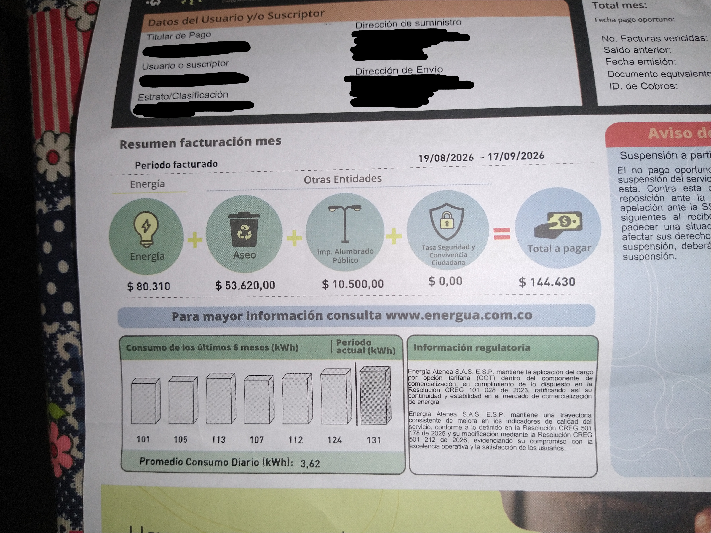

Mi factura

Historial de consumo
| Mes | Consumo (kWh) | Valor pagado (COP) |
|---|---|---|
| Hace 6 meses | 101 | No aparece en la factura |
| Hace 5 meses | 105 | No aparece en la factura |
| Hace 4 meses | 113 | No aparece en la factura |
| Hace 3 meses | 107 | No aparece en la factura |
| Hace 2 meses | 112 | No aparece en la factura |
| Hace 1 mes | 124 | No aparece en la factura |
| Mes actual (19/08/2026 – 17/09/2026) | 131 | 144.430 |
| Promedio de los 7 meses | 113,3 | — |
El consumo subió de 101 a 131 kWh: un 30 % más en el período que muestra la factura. La factura imprime además un promedio de consumo diario de 3,62 kWh.
¿En qué se va el pago de este mes?
| Concepto | Valor (COP) | Parte del total |
|---|---|---|
| Energía (131 kWh) | 80.310 | 55,6 % |
| Aseo | 53.620 | 37,1 % |
| Impuesto de alumbrado público | 10.500 | 7,3 % |
| Tasa de seguridad y convivencia ciudadana | 0 | 0 % |
| Total a pagar | 144.430 | 100 % |
La energía cuesta 613 COP por kWh (80.310 ÷ 131). Si se reparte todo el total entre los kWh, cada uno sale en unos 1.103 COP, pero el aseo y el alumbrado no bajan aunque se gaste menos energía.
Proyección de mis equipos vs. la factura
En Equipos de mi casa calculé 12,48 kWh y 7.650 COP en una semana. Proyectado a un mes de 30 días (semana × 30 ÷ 7):
| Origen | kWh al mes | Costo de la energía al mes (COP) |
|---|---|---|
| Proyección de mis 4 equipos | 53,5 | 32.787 |
| Factura (mes actual) | 131 | 80.310 |
| Diferencia (factura − proyección) | 77,5 | 47.523 |
¿Por qué no coinciden?
Mis cuatro equipos explican solo el 41 % de los kWh de la factura (53,5 de 131). Los 77,5 kWh restantes salen de lo que no está en la tabla:
- Equipos que no medí: en la foto del televisor se ven un decodificador y un parlante, y además hay un portátil cerca. También faltan los bombillos, los cargadores y la plancha u otros electrodomésticos.
- Consumo en espera: el decodificador, el parlante y el televisor siguen gastando energía aunque estén apagados con el control.
- Horas supuestas: las horas del ventilador y del televisor son estimaciones; si se usan más, el cálculo sube.
- Etiquetas vs. uso real: la nevera y la lavadora están calculadas con el consumo de la etiqueta, medido en condiciones de laboratorio. En una casa caliente o con la puerta abierta muchas veces, la nevera gasta más.
- Período de facturación: la factura cubre del 19/08 al 17/09, y el consumo del mes actual (131 kWh) es el más alto del historial.
Nota: en la primera versión de la tabla usé una nevera de 3500 W. La etiqueta real indica 25,2 kWh al mes (clase A), así que corregí el dato.

Recomendaciones de ahorro para mi familia
Con base en la tabla de equipos y en la factura (energía a 613 COP por kWh):
- Hacer un inventario completo de lo que está conectado. Faltan 77,5 kWh al mes sin explicar. Medir con un vatímetro enchufable el decodificador, el parlante, el portátil y los cargadores, y anotar cuántas horas se usan.
- Usar el ventilador dos horas menos al día. Con 90 W son 5,4 kWh menos al mes, unos 3.300 COP. Conviene usarlo solo cuando hay alguien en la habitación y en velocidad baja.
- Conectar el televisor, el decodificador y el parlante a una regleta con interruptor y apagarla al terminar. Así se elimina el consumo en espera de los tres.
- Mantener la nevera como está. Es clase A (25,2 kWh/mes), pero es el equipo que más pesa en la tabla (47 %). Revisar que el sello de la puerta cierre bien, no meter comida caliente y dejar espacio para que respire por detrás.
- Vigilar la tendencia. El consumo subió 30 % en seis meses (de 101 a 131 kWh). Revisar si se compró o empezó a usarse algún equipo nuevo en ese tiempo.
La lavadora gasta solo 1,3 kWh al mes, por lo que no es prioridad para ahorrar energía.